连接到电脑
通过PC360模式连接电脑，可以畅玩各类主流PC游戏
接收器 无线连接
1、接收器插入电脑
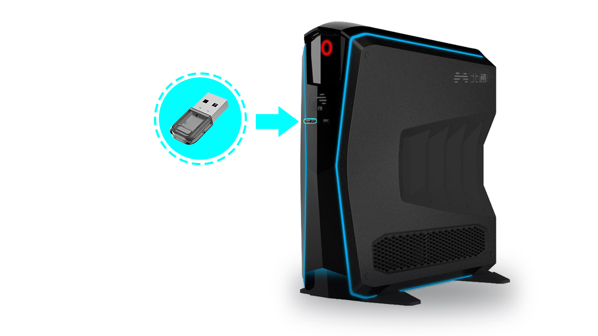
将无线接收器插入电脑USB接口
状态提示：
指示灯缓慢闪烁，此时接收器处于无线配对模式
2、手柄开机自动连接
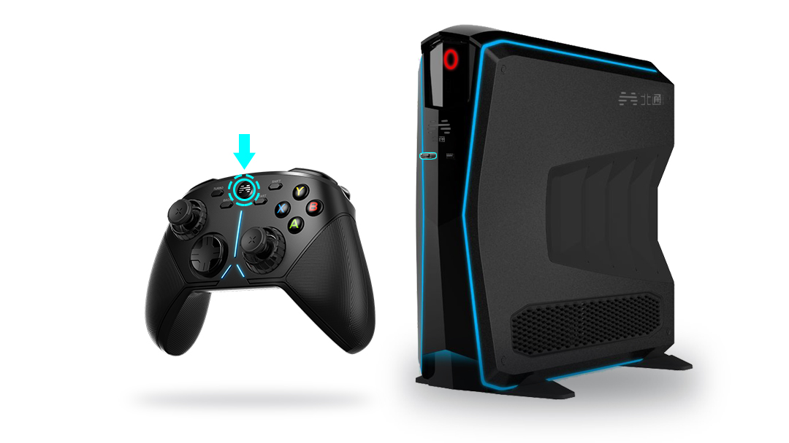
轻按一下手柄的【北通LOGO键】开机，稍等片刻，手柄将自动与电脑连接；
状态提示：
当手柄震动一下，指示灯由绿色上下轮流慢闪变为常亮，即连接成功
※ 成功连接后，指示灯的灯效初始默认为常亮，若曾通过“北通手柄助手”对手柄灯效进行调节，则灯效以实际调节的效果为准。
3、切换手柄模式

长按【北通LOGO键】3秒，切换手柄到PC360模式，即上灯条绿色亮起3秒，即可畅玩游戏。
如果下灯亮起，则再次长按【北通LOGO键】3秒，即可切换。
状态提示：
【PC360模式】：上灯条绿色亮起3秒
【BFM模式】：下灯条绿色亮起3秒
4、自动回连

接收器与手柄首次配对成功后，再次使用接收器时，接收器将自动回连手柄；
将无线接收器插入电脑USB接口后，轻按一下手柄的【北通LOGO键】开机，稍等片刻，即可自动配对连接。
数据线 有线连接
1、数据线连接电脑
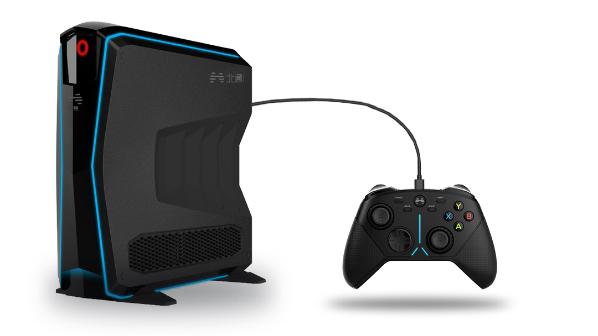
通过数据线将电脑与手柄直接连接；
状态提示：
指示灯缓慢闪烁，此时手柄处于充电状态
2、手柄开机自动连接
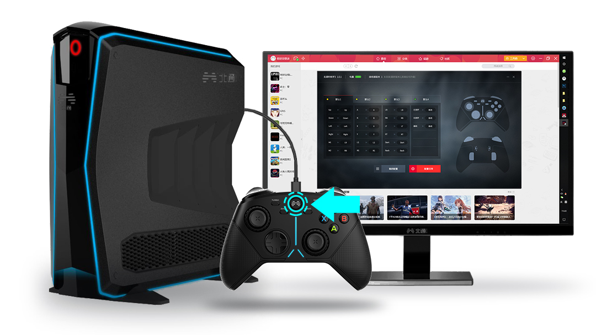
轻按一下手柄的【北通LOGO键】开机，稍等片刻，手柄将自动与电脑连接；
状态提示：
当手柄震动一下，指示灯变为常亮，即连接成功
※ 成功连接后，指示灯的灯效初始默认为常亮，若曾通过“北通手柄助手”对手柄灯效进行调节，则灯效以实际调节的效果为准。
3、切换手柄模式

长按【北通LOGO键】3秒，切换手柄到PC360模式，即上灯条绿色亮起3秒，即可畅玩游戏。
如果下灯亮起，则再次长按【北通LOGO键】3秒，即可切换。
状态提示：
【PC360模式】：上灯条绿色亮起3秒
【BFM模式】：下灯条绿色亮起3秒
连接到安卓电视
通过BFM模式连接市面上主流安卓电视，可畅玩各类电视游戏及云游戏
接收器 无线连接
1、接收器插入电视
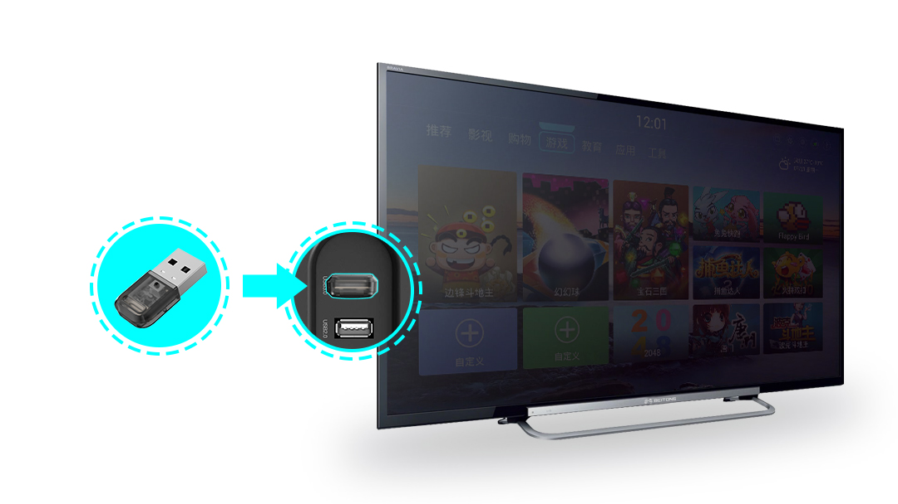
将无线接收器插入安卓电视USB接口
状态提示：
指示灯缓慢闪烁，此时接收器处于无线配对模式
※ 注意：如果电视USB接口处于电视背后，电视屏幕会对接收器信号产生一定干扰，导致无线距离缩短。建议通过USB延长线连接电视和无线接收器。
2、手柄开机自动连接
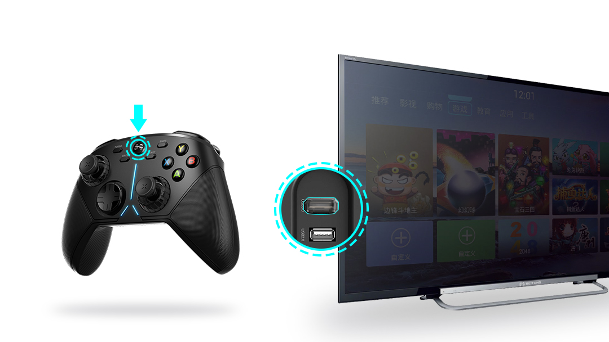
轻按一下手柄的【北通LOGO键】开机，稍等片刻，手柄将自动与安卓电视连接
状态提示：
当手柄震动一下，指示灯由绿色上下轮流慢闪变为常亮，即连接成功
※ 成功连接后，指示灯的灯效初始默认为常亮，若曾通过“北通手柄助手”对手柄灯效进行调节，则灯效以实际调节的效果为准。
3、切换手柄模式
长按【北通LOGO键】3秒，切换手柄模式到BFM模式，即下灯条绿色亮起3秒，即可畅玩游戏
如果上灯条亮起，则再次长按【北通LOGO键】3秒，即可切换。
状态提示：
【PC360模式】：上灯条绿色亮起3秒
【BFM模式】：下灯条绿色亮起3秒
4、自动回连
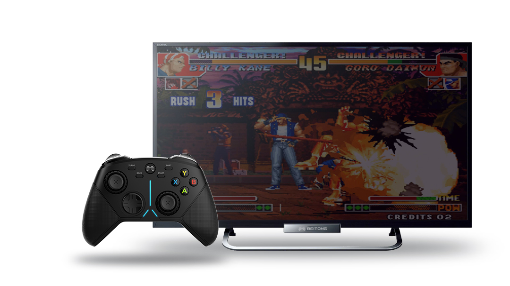
接收器与手柄首次配对成功后，再次使用接收器时，接收器将自动回连手柄；
将无线接收器插入电视USB接口后，轻按一下手柄的【北通LOGO键】开机，稍等片刻，即可自动配对连接。
数据线 有线连接
1、数据线连接安卓电视
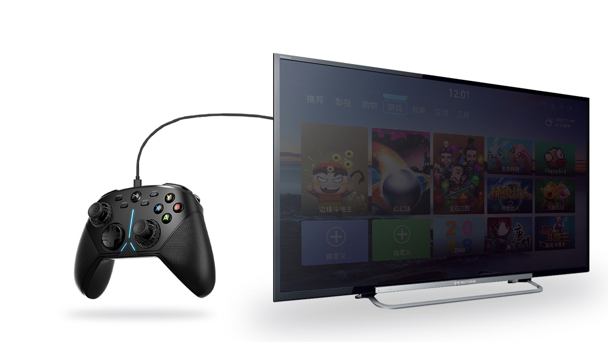
通过数据线将安卓电视与手柄直接连接；
状态提示：
指示灯缓慢闪烁，此时手柄处于充电状态
2、手柄开机自动连接
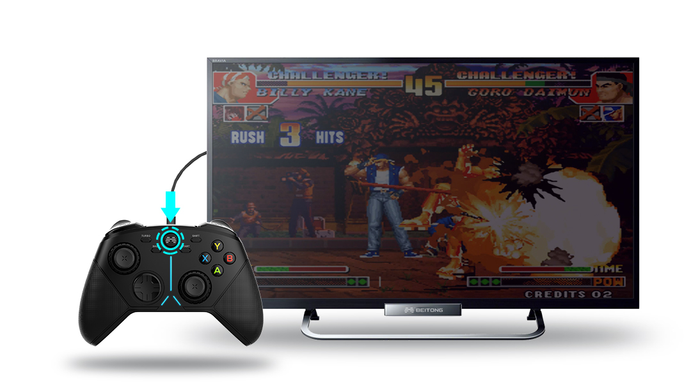
轻按一下手柄的【北通LOGO键】开机，稍等片刻，手柄将自动与安卓电视连接
状态提示：
当手柄震动一下，指示灯变为常亮，即连接成功
※ 成功连接后，指示灯的灯效初始默认为常亮，若曾通过”北通手柄助手”对手柄灯效进行调节，则灯效以实际调节的效果为准。
3、切换手柄模式
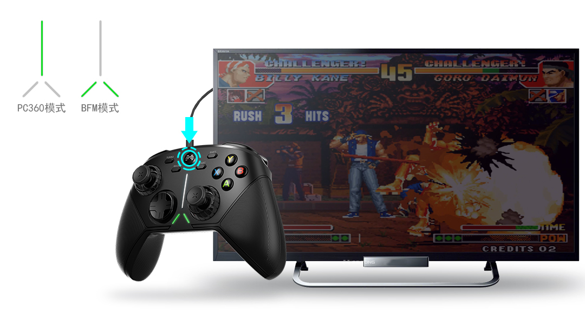
长按【北通LOGO键】3秒，切换手柄模式到BFM模式，即下灯条绿色亮起3秒，即可畅玩游戏
如果上灯条亮起，则再次长按【北通LOGO键】3秒，即可切换。
状态提示：
【PC360模式】：上灯条绿色亮起3秒
【BFM模式】：下灯条绿色亮起3秒
《北通手柄助手》配置软件
手柄有线连接电脑，自定义设置灯光、震动、按键宏功能、摇杆曲线等
下载安装《北通手柄助手》PC版
1、下载并安装北通游戏厅
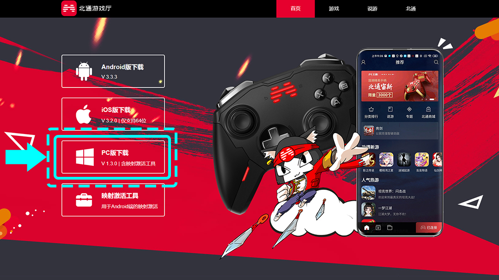
① 电脑上登录北通官网：http://www.betop-cn.com/ ，进入【下载页面】
② 选择【PC版下载】，下载安装好北通游戏厅PC版；
2、手柄有线连接电脑
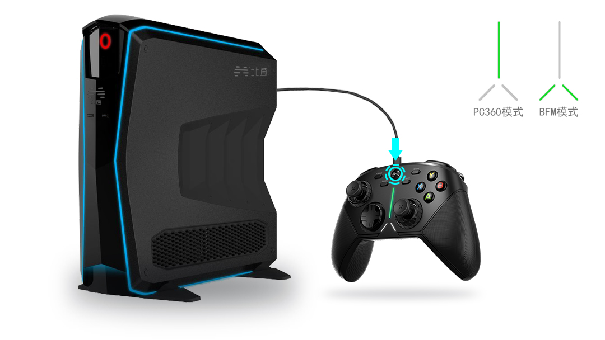
！手柄必须通过有线方式连接电脑，方可使用《北通手柄助手》工具
① 通过数据线将手柄与电脑连接；
② 按下【北通LOGO键】开机，手柄自动连接；
3、启动北通手柄助手
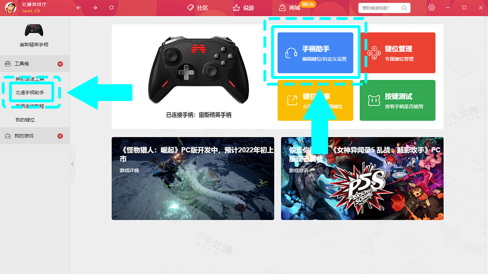
① 打开北通游戏厅PC版；
② 在页面左侧【工具箱】中或手柄图标旁边，找到【北通手柄助手】入口，点击即可启动配置工具。
4、自动升级固件
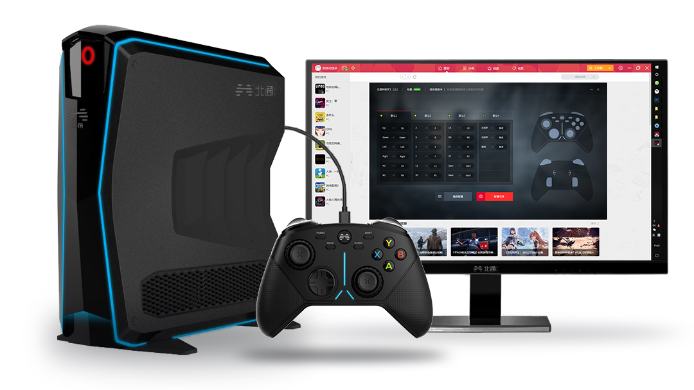
① 北通手柄助手智能检测手柄及接收器固件版本，并自动启动升级；
② 固件升级完成后，根据操作指引进行操作，即可完成手柄配置。
※ 固件升级全程自动，不需要手动操作；
※ 固件升级速度很快，大约30秒即可完成；
※ 建议检测到新固件均进行升级，以修复部分问题并加持更多好玩的功能。
手柄功能自定义设置（必须有线连接电脑）
1、基础设置
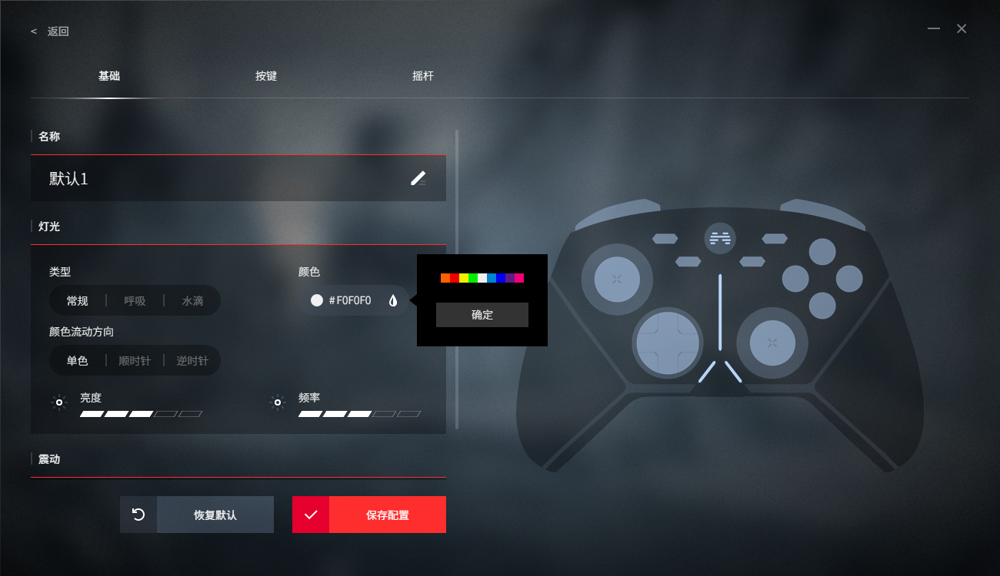
【名称修改】
① 名称：可修改配置名称
【灯光调节】
① 类型：可修改灯光闪动模式
※ 常规：所有灯光全部亮起
※ 呼吸：所有灯光呼吸变化
※ 水滴：灯光从上往下流动
② 颜色：可修改灯光颜色，一共9色可选
③ 颜色流动方向：按照颜色表顺序变换
※ 单色：所有灯光单色常亮
※ 顺时针：所有灯按颜色顺时针变换
※ 逆时针：所有灯按颜色顺时针变换
④ 亮度：调节灯光亮度，5档可选
⑤ 频率：调节灯光变换频率，5档可选
【震动调节】
强度：可调节手柄震动反馈的强度
2、按键功能设置
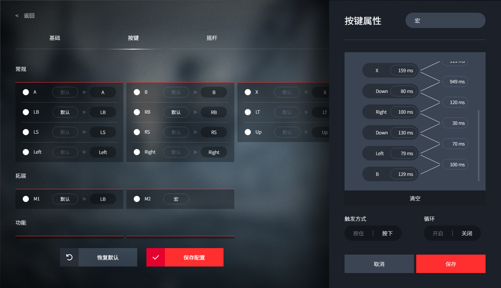
可自定义修改手柄按键的映射。
① LB、RB、M1、M2四个键，可自定义设置宏，也可键位映射其他按键；
② 手柄其他按键仅可键位映射；
【键位映射】
可将手柄上的按键随意映射手柄其他键值
例如将A键映射到B键，实现按A时触发B的动作；
① 鼠标点击【A键】箭头后的输入框，删除键值；
② 按下手柄上B键，即可将【A键】映射到【B键】；
【宏编程】
可将LB、RB、M1、M2进行宏编程，一个按键最高设置32个动作。
能实时录制连招操作中【动作】【动作时长】和每个动作间的【时间间隔】，并可以毫秒为单位进行微调。
例如设置LB键的一键宏：
① 鼠标点击【LB键】旁边的【默认】；
② 按键属性选择【宏】；
③ 按实际连招操作，在手柄上操作一次，即可实时记录【动作】【动作时长】和每个动作间的【时间间隔】；
④ 根据游戏实际情况，修改【动作时长】和【时间间隔】；
⑤ 选择宏的触发方式，并设置是否循环，点击保存即可完成宏编程。
3、摇杆灵敏度设置
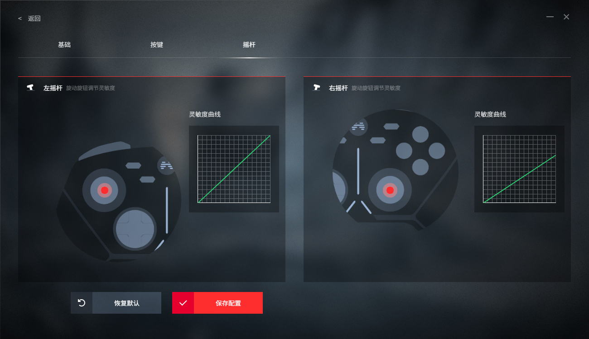
该界面可实时查看灵敏度变化曲线，旋转摇杆旋钮即可调节
其他功能
变速旋钮操作说明
物理变速旋钮，可以实时调整摇杆灵敏度。
每旋转三下，三颗指示灯颜色统一时，即为调节一档。
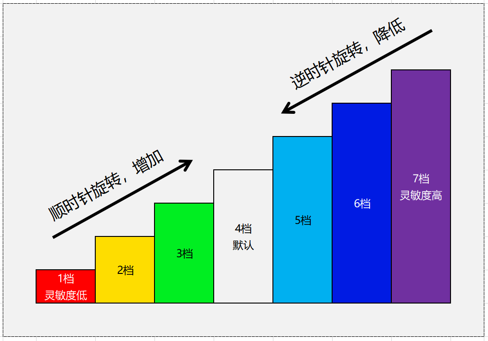
出厂默认为第4档，灵敏度指示灯为白色。
顺时针旋转增加灵敏度，逆时针旋转降低灵敏度。
具体操作如下：
※【左旋钮】：调节左摇杆，指示灯左侧流动
※【右旋钮】：调整右摇杆，指示灯右侧流动
※【灵敏度增加】：顺时针转动旋钮，指示灯由下往上流动
※【灵敏度降低】：逆时针转动旋钮，指示灯由上往下流动
※【左摇杆恢复默认】：按住【SHIFT键】不松手，再下压左摇杆，左侧白灯亮起3秒即恢复
※【右摇杆恢复默认】：按住【SHIFT键】不松手，再下压右摇杆，右侧白灯亮起3秒即恢复
※【同时恢复默认】：长按【SHIFT键】3秒，上灯条熄灭3秒即左右摇杆灵敏度均恢复默认
增加手柄配重及接收器收纳
手柄左右两侧握把可沿缝隙打开。
左右均可加入【6g】【12g】的配重块，可以让手柄从244g依次增加到280g。
配重仓，更可作为【无线接收器收纳仓】使用。
① 打开握把面盖，取出无线接收器；
② 下方小配重仓放置6g的配重块；
③ 上方小配重仓放置12g的配重块。
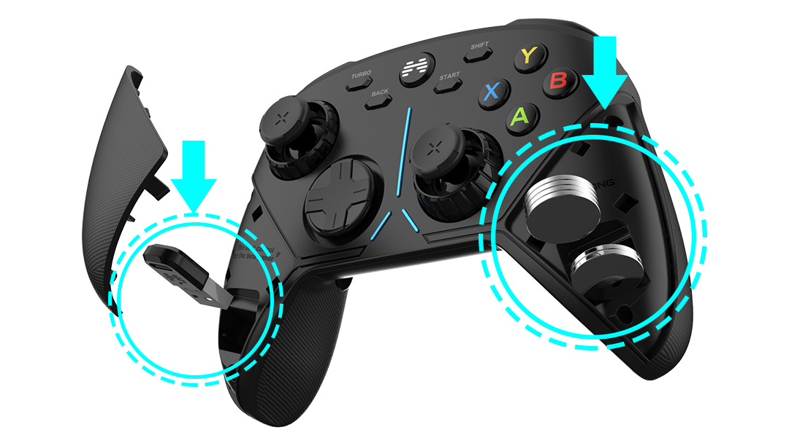
※ 除阿修罗3粉晶特别版外，其他标准版手柄包装不含配重块，配重块需要额外购买。
※ 可用面值【一角】的硬币代替配重块。
其中小配重仓可装载2枚【一角硬币】，大配重仓可装载4枚【一角硬币】，左右两边一共可装载12枚硬币。
充电及续航说明
北通阿修罗3，内置950mAh锂电池，包装附送Type-C装USB数据线。
手柄满电状态下，最长续航可达80小时，正常使用状态下约为40小时。
注！手柄续航时间受指示灯亮度、手柄震动频率和强度等一系列因素影响，会根据个人使用习惯变化。
充电方式：
① 有线连接电脑充电；
② 有线连接电视充电；
③ 用手机充电器充电；
* 有线连接电脑/电视玩游戏时，手柄会同步进行充电。
充电，指示灯提示：
充电时指示灯呼吸灯，充满后指示灯长亮。
※ 开机状态：无
※ 关机状态下：颜色顺时针流动，频率：3档
※ 0-25%：1234流水
※ 25%-50%：1常亮，234流水
※ 50%-75%：12常亮，34流水
※ 75%-99%：123常亮，4呼吸
※ 满电：1234常亮白灯
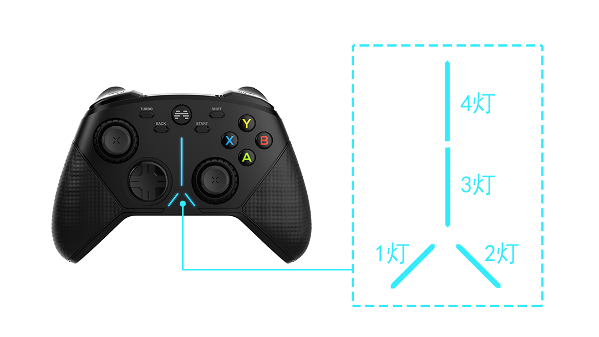
低电量，指示灯提示：
电量低于20%时，12灯红色快闪
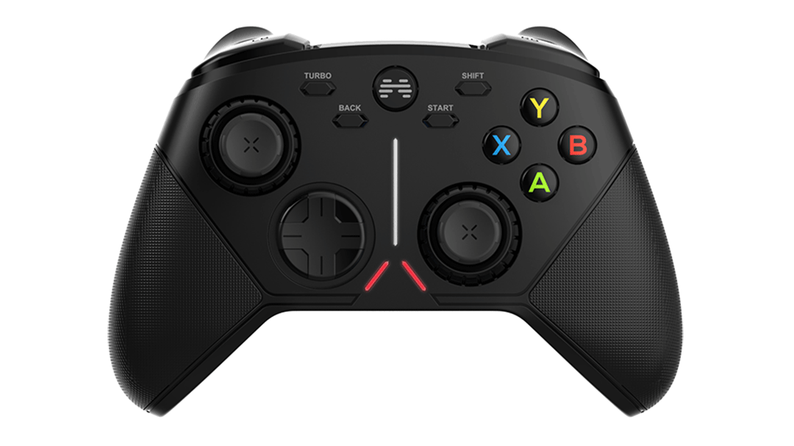
固件升级说明
手柄固件自动升级
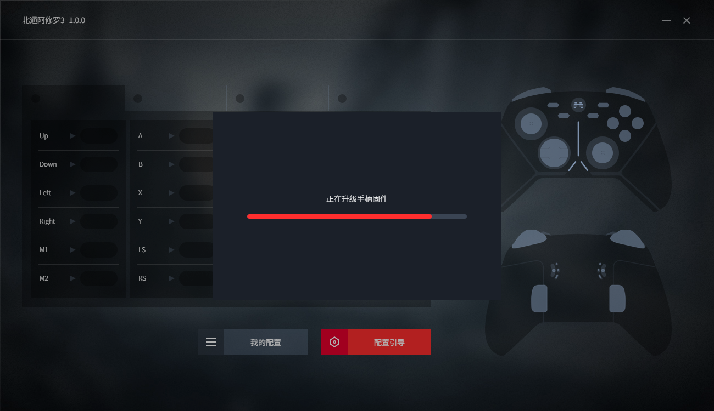
① 手柄有线连接上电脑；
② 电脑打开《北通手柄助手》配置软件；
③ 手柄助手会自动检查手柄固件版本，并进行自动升级。
更多其他功能说明
手柄键位说明
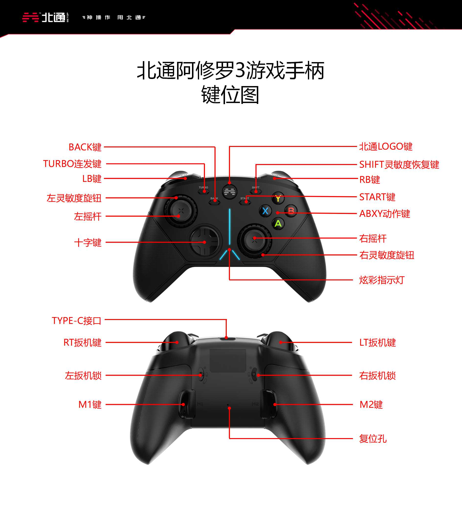
手柄指示灯说明

TURBO连发说明
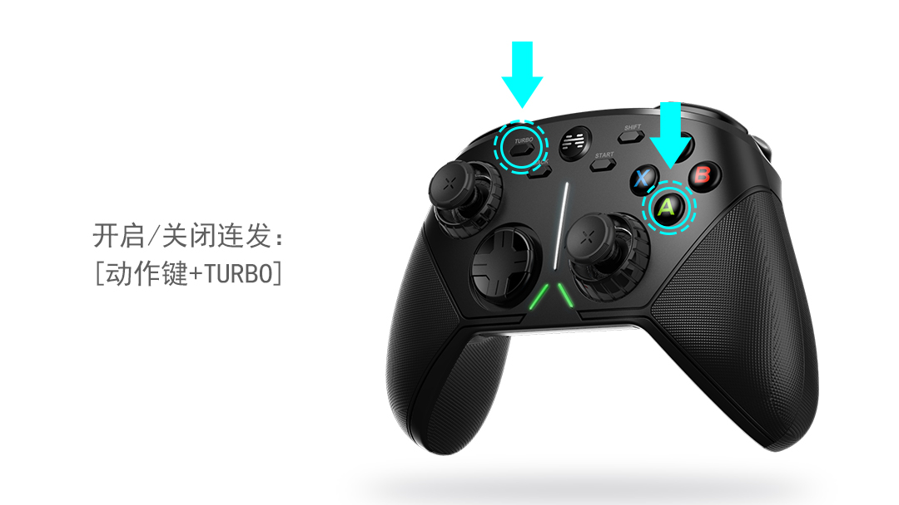
开启连发：
按住【动作键】不松手，然后按一下【TURBO键】
※ 手柄会震动一下，说明连发开启
关闭连发：
按住已开启连发的【动作键】不松手，然后按一下【TURBO键】
※ 手柄无提示
SHIFT摇杆与十字键互换
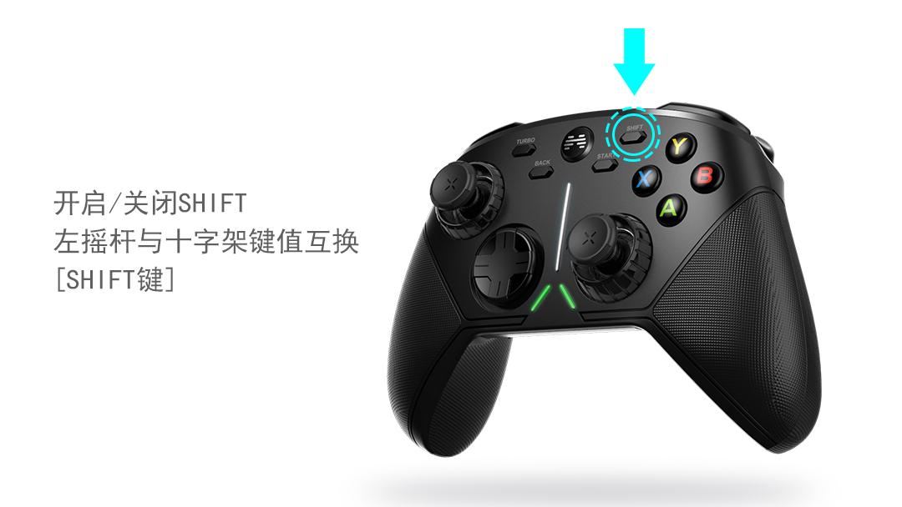
轻按一下【SHIFT键】即可开启摇杆与十字键互换功能。
扳机行程调整
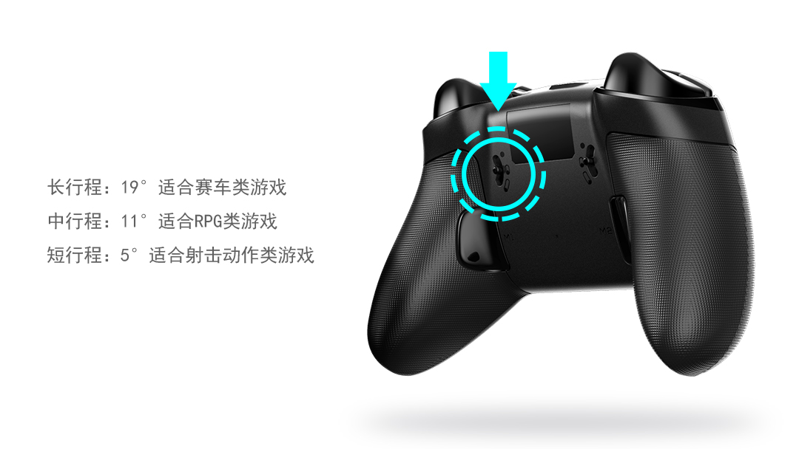
通过手柄背后的扳机锁，可以直接切换LT/RT键的扳机行程
※ 长行程：19°，适合赛车类游戏
※ 中行程：11°，适合RPG类游戏
※ 短行程：5°，适合射击、动作类游戏
无线强制配对
1、手柄开启强制配对
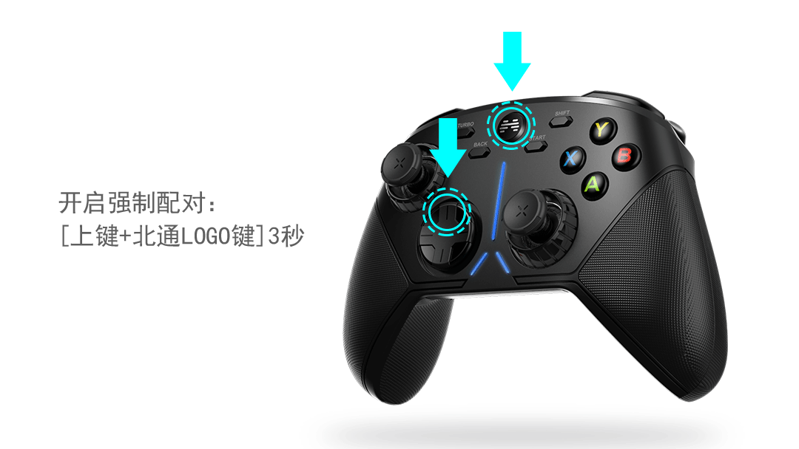
① 保证手柄处于关机状态，可同时按住【BACK键+B键】强制关机；
② 同时按住【上键+北通LOGO键】不松手3秒，直至指示灯快闪，即进入强制配对状态。
2、接收器开启强制配对
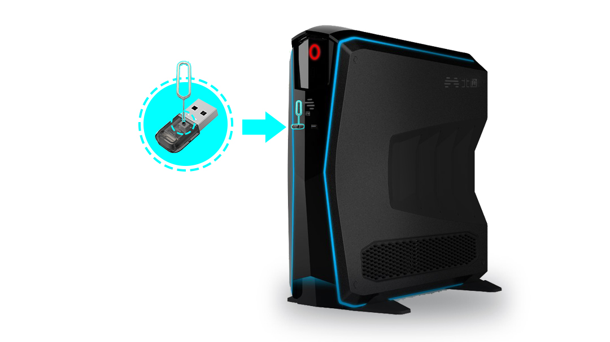
① 将无线接收器插入USB接口；
② 用顶针戳一下接收器上的复位孔，指示灯由慢闪变为快闪，即进入强制配对状态；
3、自动配对成功
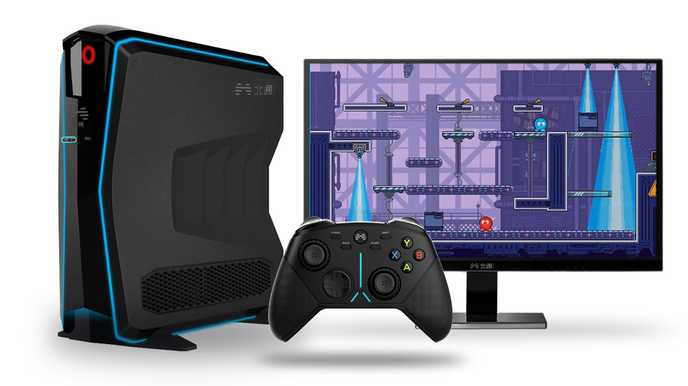
稍等片刻，手柄震动一下，指示灯变为常亮即强制配对成功。
4、根据游戏设备切换手柄模式
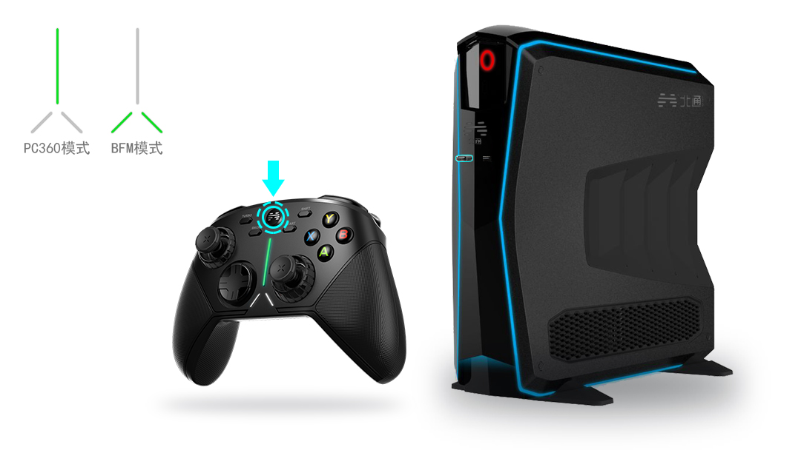
长按【北通LOGO键】3秒，切换手柄模式
※ PC360模式：适用于电脑，上灯条亮起3秒
※ BFM模式：适用于安卓电视，下灯条亮起3秒
关机说明
强制关机：
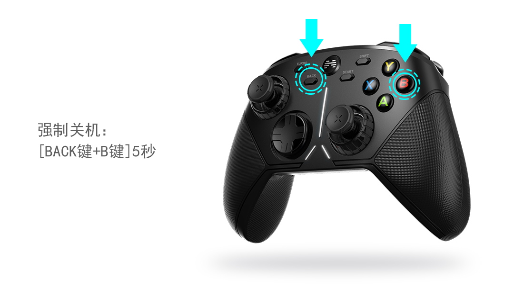
同时按住【BACK键+B键】5秒，指示灯熄灭即为关机
※ 待连接状态下：120秒内未连接成功，自动关机
※ 已连接状态下：10分钟内无操作，自动关机
※ 电量不足，自动关机